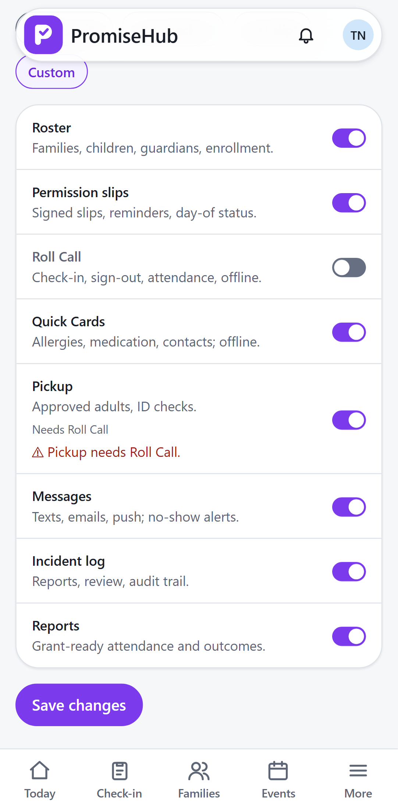
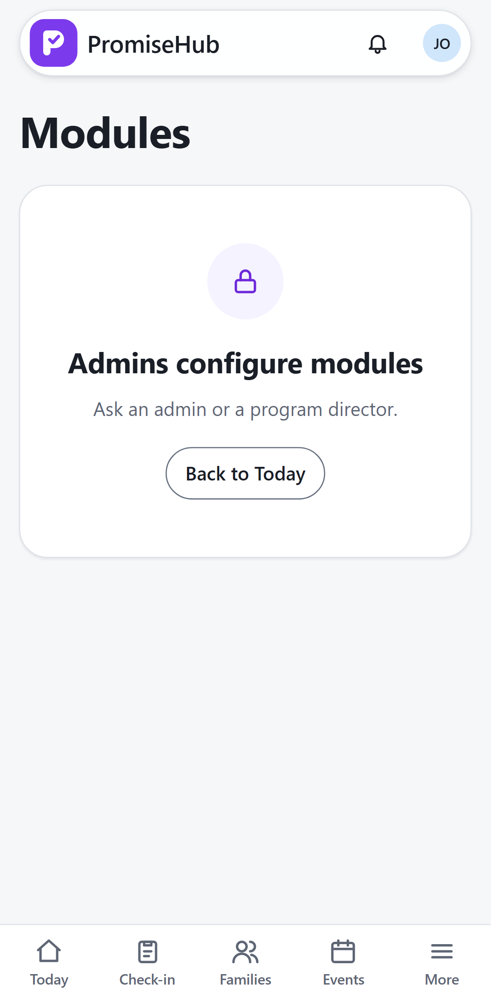

PromiseHub · Video 03
Configure modules
From a single module to the whole suite, per organization
From a single module to the whole suite, per organization
Then the Just check-in preset, saved, and a smaller top bar.
| Rule | Answer |
|---|---|
| A module on without what it needs | 422, one message per module |
| Every save | ModuleChanged audit, before and after |
Site lead opens /settings/modules | 403 and who to ask |


Today, Check-in, Families. /slips lands on Today; the server answers 404.
Dependencies, roles, cross-tenant isolation, audit, and the roster off and on again with its data intact.
Switches, inline errors, presets, and every off module's address at phone and desktop widths.
Next: maintain households